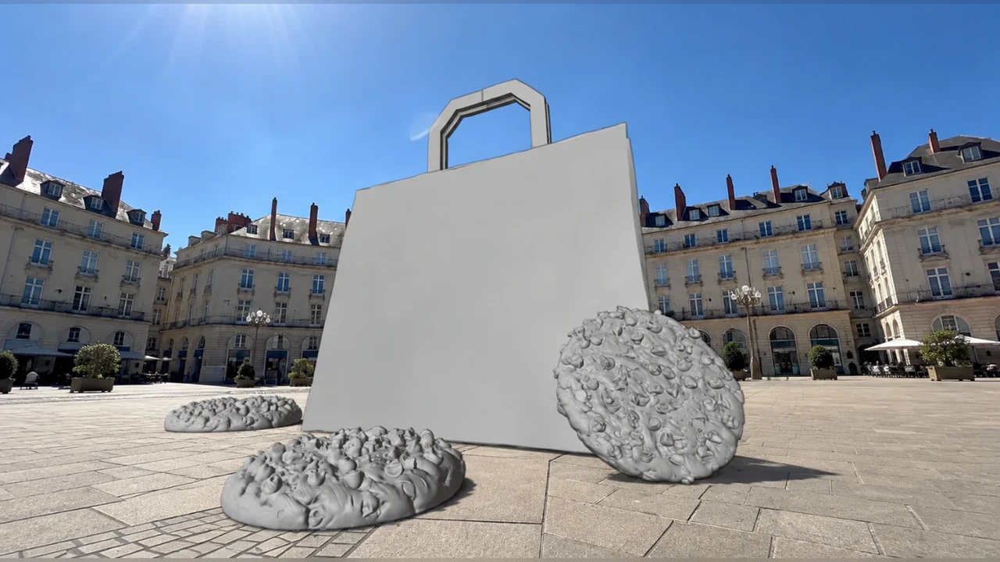
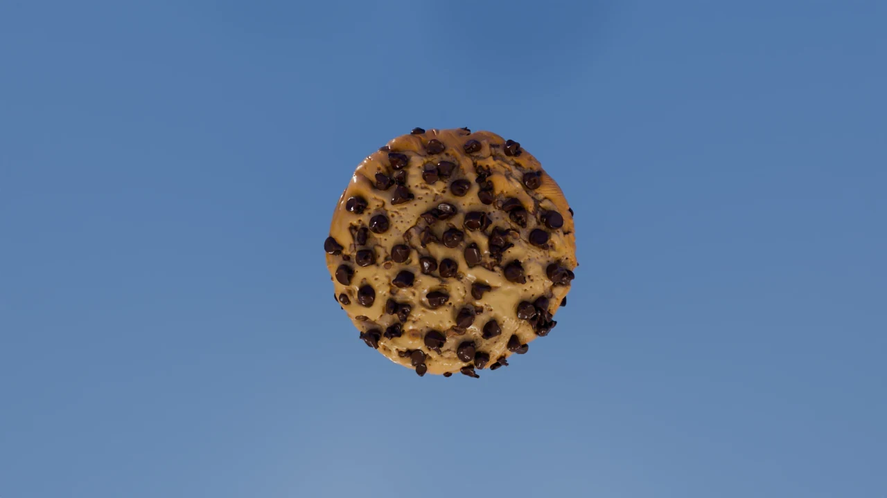
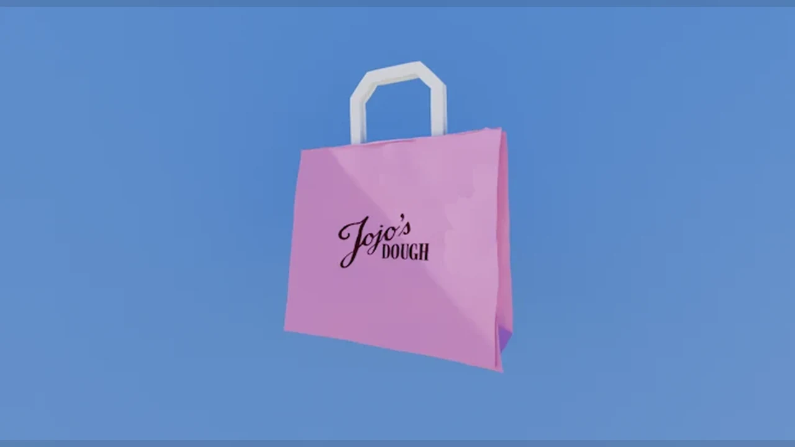

[ 04 ]
JOJO’S DOUGH
2026
DIRECTION VISUELLE 3D POUR L’UNIVERS DE JOJO’S DOUGH, ENTRE PRODUIT, FOOD DESIGN ET MISE EN SCÈNE COLORÉE.
- MODÉLISATION
- ANIMATION
- RENDU
- COMPOSITING
- COLOR GRADING
LOGICIELS : BLENDER / AFTER EFFECTS


